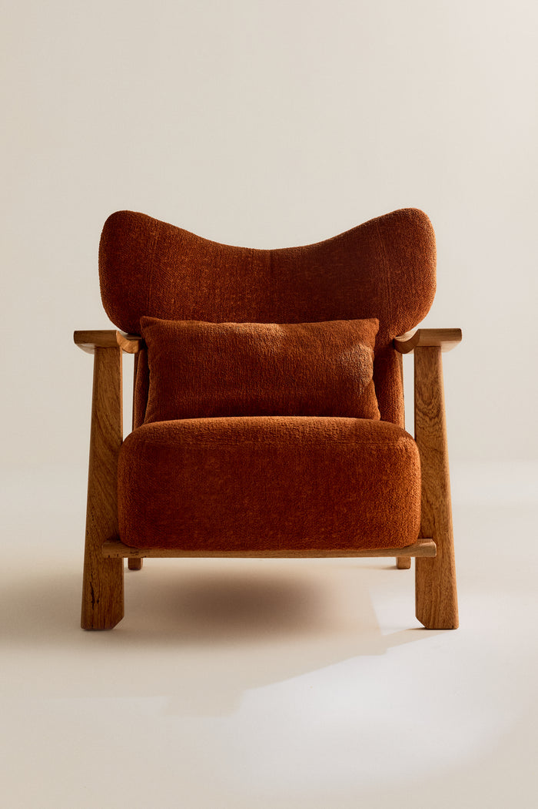

More · IA e experiência digital · Guia para o time · 15.10.2026
Três sugestões. Sete exemplos. Um guia.
A More pode ser a marca de mobiliário mais desejada do Brasil. O craft no centro. A jornada da cliente roda sozinha onde ninguém precisa digitar. O ateliê fica com as pessoas. Este guia diz o que vale fazer antes de 05.11 e o que fica para conversar. O que entra, e quando, é o time quem diz.
Para: Fred, Edu, VitorLoja abre em 05.11.2026Leitura: 25 minBase: call de 15.10, site, lojas de referência, Instagram, material oficial da MoreEscrito pelo JJ, o João, que estava na call. De fora da More, sem acesso ao painel

Poltrona Leticia81x71x89
[00] Três sugestões
Se for mexer em algo antes da abertura, começaria por aqui.
Três sugestões, não três tarefas. Cada uma diz quem poderia fazer, quando faria sentido e como saber se funcionou. Nenhuma pede agência nem código. O time pega o que servir e deixa o resto.
Sugestão 1
Sete ajustes no painel antes de tirar a senha.
Quem poderia
O Vitor, no painel; o Fred, o texto do Sobre e o endereço.
Quando faria sentido
Até 29.10, uma semana antes da abertura.
Como saber se funcionou
Nenhum preço de R$ 1 na loja. Imposto do checkout conferido.
Toda página com título e descrição, o texto que aparece na aba do navegador e no Google.
Sobre em português, Termos em português, grafias corrigidas.
"Sob encomenda · cerca de 120 dias" ao lado do botão; "Pronta entrega" na tomada.
Botão "Conversar no WhatsApp" no lugar de "A partir de".
Endereço, horário e "visite a loja" no site; perfil no Google.
Senha removida e o link na bio do Instagram.
Sugestão 2
Duas horas com o JJ, e o Vitor fica à vontade no painel do Shopify.
Quem poderia
O JJ se ofereceu na call; o Vitor opera.
Quando faria sentido
Quando o time quiser. Antes de 24.10 ajuda na sugestão 1.
Como saber se funcionou
Ao fim, o Vitor faz sozinho: trocar foto, texto, preço, rótulo e título de uma página.
O passo a passo das cinco mudanças cabe numa folha, na pasta do time.
Nenhum pedido à agência para os ajustes da sugestão 1.
Sugestão 3
Uma lista só para todas as conversas, desde a abertura.
Quem poderia
Alguém do time como dono (o Edu, talvez); todos anotam depois de cada conversa.
Quando faria sentido
Antes de 05.11, se der. Uma olhada nela em 05.12.
Como saber se funcionou
Uma planilha com: nome, WhatsApp, e-mail (se houver), peça de interesse, origem, é arquiteto?, consentimento, situação.
Trinta dias depois, cada convidado da abertura, cada conversa de WhatsApp e cada compra da tomada estão nela.
A primeira pergunta de cada conversa anotada: preço, prazo ou outra. É o dado que ajuda a decidir o preço na grade.
Para depois: esconder o preço na grade. A conversa inclinou para isso, a evidência não; está em [03]. Duas escolhas de gosto ficam com o time, em [01]: o convite com ou sem a elipse e a cor da capa do livro. Preferimos sem a elipse e em Vermelho Jambo, o vermelho do sistema.
[01] Sete exemplos
O que o sistema permitiu fazer.
Tudo abaixo saiu do sistema de design e de fotos reais. Nada é final. São pontos de partida para o time olhar e criticar. Cada cartão diz o que é, o que mostra e o que fica com o time.
Exemplo · sistema
Sistema de design tokenizado
Cores, tipos, marca, voz e impresso, medidos no site e no Instagram. Tudo escrito em tokens: um arquivo de valores que pessoas e programas leem igual. É a base dos outros exemplos. Nenhum foi desenhado do zero.
Feito com
O CSS e as fontes do site, lidos no navegador. Cada regra tem um teste automático: passa ou falha. O que é observado na marca, o que é dedução nossa e o que é invenção estão separados.
Mostra
Que uma pessoa que nunca viu as conversas faz uma peça nova só com o repositório.
Se o time quiser
Passar o olho na tabela de aceite (na página do sistema, uma linha por regra), regra por regra, e dizer o que fica e o que sai. O que só o time tem: ficha de cada peça, o texto do Sobre em português, os detalhes da abertura. Já no repositório: variáveis do Figma, mapa do tema Shopify, PDF de regras numa página, espécime da fonte.
Grade, lista e o modo Ambientes. A página da peça vira ficha técnica: prazo, a partir de, medidas, blocos 2D e 3D. O botão abre o WhatsApp com a escolha feita.
Feito com
Os tokens do sistema e só fotos reais. Conferida com as listas de boas práticas de loja e de acessibilidade.
Mostra
Que uma arquiteta acha prazo, preço e arquivo sem clicar. No site de hoje, o prazo não existe.
Se o time quiser
Conversar se a ficha técnica vira padrão. Depois, com acesso ao Shopify, um tema duplicado com campos para prazo, medidas e arquivos.
Nove peças. Cinco em sequência (aviso, convite, véspera, dia, obrigado) para story, post e WhatsApp. A5 para a gráfica. Vitrine com a marca em tamanho grande. O livro "Menos do mesmo" como objeto: 230×300 mm, 112 páginas. Etiquetas e lista com um QR por peça, que diz de qual peça veio a visita.
Feito com
Mestres em HTML com os tokens e os textos num arquivo à parte: trocar o texto e exportar refaz a peça nos três formatos. O livro é um objeto 3D posto numa foto real do Instagram.
Mostra
Que trocar o texto refaz as peças nos três formatos. Cronograma: revisão 17.10, aviso 20.10, gráfica 22.10, convite 28.10.
Se o time quiser
Duas escolhas de gosto, ditas em [00]: a elipse do convite e a cor da capa. Tudo é prova: faltam gráfica, lista de convidados e as nove legendas do livro.
A troca de foto no cartão da peça do mymore.design, medida no navegador. Comparada com The Row, Jacquemus, Knoll, Norr11 e Kann. A composição de hoje fica. A sugestão muda só a transição: fusão de 300 ms, sem a foto crescer. Ou nenhum movimento, se o time preferir.
Feito com
O CSS do tema e as lojas de referência, medidos no mesmo dia. Viraram tokens e duas regras no sistema, como proposta.
Mostra
Que dá para trocar gosto por medida: duração, curva e o que se move, lado a lado.
Se o time quiser
Abrir a demonstração e escolher entre a fusão de 300 ms e nenhum movimento. As duas cabem no sistema.
A casa 04 da Alameda Franca, feita da planta. 5,4 por 17 metros, pé-direito de 4,20, escada ao fundo, luz pela fachada. 24 peças; cada clique abre foto, preço e WhatsApp. Abre leve, também no celular.
Feito com
A planta EX_A102 e as fotos de estúdio.
Mostra
Que a loja pode existir na tela antes de existir na rua. As medidas de hoje vêm das fotos, e o cartão avisa.
Se o time quiser
Fica assim, como prova do possível. O refino vem depois, com modelos 3D reais, o corte 301_A, fotos da obra e a lista do que estará exposto.
O que roda hoje no site e no checkout, lido de fora com prova. Oito riscos até 05.11, sete de graça. O que ligar depois, um por vez. E a jornada inteira da cliente, na página própria.
Feito com
Um navegador real, o código do site e o checkout até a tela de pagamento, sem fechar pedido. O que mora dentro do painel está marcado como em aberto.
Mostra
Que a automação cabe no bastidor sem a cliente ver. Na frente, o site continua a galeria que é.
Se o time quiser
Responder as seis perguntas da página e marcar quem faz cada linha da tabela "agora".
As 24 peças por tipo, por ambiente, por material e por história. Uma peça pertence a vários caminhos ao mesmo tempo, e o site mostra por onde continuar. Direção para 2027, para conversar.
Feito com
Os dados do site e as quatro cenas de estúdio. Duas versões lado a lado: a associativa e a com navegação clássica.
Mostra
Que dá para explorar a More como uma galeria, sem grade de loja e sem parecer um grafo.
Se o time quiser
Ler o documento e dizer se a direção vale, e com que fotos. Nada disso muda o site de hoje.
A linha de cima é o que a pessoa vê. A do meio, o que o time faz. A de baixo, onde a informação fica. Desenhado a partir do site e da conversa. O que não dá para ver de fora está marcado como suposição.
Deslize para o lado →
Hoje. Cada orçamento nasce e morre numa conversa de WhatsApp pessoal. Nada registra quem perguntou, o quê, nem em que pé está.
1. Descobre
Palco
Instagram e indicação. O link da bio leva a um site com senha.
Bastidor
Vitor posta as peças fotografadas em estúdio.
Sistemas
Instagram
2. Olha
Palco
Abertura "Menos do mesmo.", grade com preço, página da peça sem prazo.
Bastidor
Agência mexe no tema; o time pede por e-mail.
Sistemas
Shopify, tema da agência
3. Pergunta
Palco
Botão "A partir de" abre o WhatsApp com a peça e os materiais escolhidos.
Bastidor
Alguém do time responde à mão, quando vê (suposição).
Sistemas
WhatsApp pessoal, sem nome da marca
4. Compra ou orça
Palco
Tomada: carrinho e checkout. Demais peças: orçamento dentro da conversa.
Bastidor
Orçamento feito à mão, caso a caso (suposição).
Sistemas
Shopify checkout e Pagar.me (só a tomada). Nada registra o orçamento.
5. Espera
Palco
Cerca de 120 dias sem aviso.
Bastidor
Produção acompanhada de cabeça; cliente pergunta.
Sistemas
Nenhum
6. Recebe e volta
Palco
Entrega. Depois, silêncio: sem convite nem novidade.
Bastidor
O que se sabe do cliente fica na memória de quem atendeu.
Sistemas
Nenhum
Depois. Quase tudo é conteúdo e configuração no painel. Ficha técnica na página da peça, rótulos, número com nome, modelos de mensagem, uma planilha. Só a proposta em 24 h e as mensagens por etapa pedem rotina nova do time.
1. Descobre
Palco
Instagram aponta para a loja (05.11) e para o site aberto. Anúncio só da tomada.
Bastidor
Posts com o nome da peça e "na loja".
Sistemas
Instagram, Meta Insights
2. Olha
Palco
Grade com "Sob encomenda" e "Pronta entrega". Página da peça vira ficha técnica: prazo, "a partir de", medidas, blocos.
Bastidor
Vitor edita foto, texto, preço e rótulo no painel, sem agência.
Sistemas
Painel do Shopify
3. Pergunta
Palco
"Conversar no WhatsApp" no botão. O número aparece como More.
Bastidor
Resposta com modelo pronto e registro na lista: nome, peça, é arquiteto?
Sistemas
WhatsApp Business, planilha de contatos
4. Compra ou orça
Palco
Tomada: compra. Demais: proposta escrita em até 24 h, com prazo e condição.
Bastidor
Proposta montada a partir da ficha técnica.
Sistemas
Shopify, Pagar.me, planilha
5. Espera
Palco
Quatro mensagens, uma por etapa: confirmado, em produção, acabamento, entrega.
Bastidor
Modelos prontos; data confirmada no pedido.
Sistemas
WhatsApp Business, planilha
6. Recebe e volta
Palco
Entrega com foto. Convite para o próximo lançamento.
Bastidor
Lista de convidados com consentimento.
Sistemas
Planilha, e-mail
[03] O que a call deu por certo
Duas certezas, postas à prova.
Duas ideias saíram da call de 15.10 como quase certas. Fomos procurar o que fala contra elas. Na própria call, no teste do site, nas lojas premiadas e nos 42 posts.
A. "O gargalo é captar o contato de quem visita o site."
Quem disse
O JJ levantou. O time concedeu com um "às vezes" e ponderou contra: é compra de alto valor, a pessoa quer que alguém explique o que muda com a madeira.
Contra
O botão "A partir de" já abre o WhatsApp com peça, madeira e tecido. O sinal existe. O que falta é onde guardá-lo.
Instagram: 14 dos 195 comentários de terceiros pedem preço, medida ou informação. Nenhum tem resposta pública da More nos dados coletados.
Dito na call: cem clientes num ano está ótimo. Cem pessoas cabem numa planilha; não pedem uma base de dez mil e-mails.
Das lojas premiadas, as mais parecidas com a More terminam em "pedir orçamento", sem formulário de e-mail.
Sabemos / suposição
Sabemos: o site não guarda contato antes do WhatsApp; a compra da tomada já registra nome, e-mail e endereço; o cadastro do 2D/3D não segura o arquivo.
Suposição: que quem visita e não escreve é cliente perdido. O site está com senha; ninguém mediu.
Mudaria de ideia se
Nas primeiras 50 conversas, o time não souber quem perguntou o quê. Ferramenta: a lista única da sugestão 3.
O Shopify Análises mostrar mais de 300 sessões por semana nas peças e menos de 2% clicando em "Conversar". Ferramenta: Análises mais um link rastreável no botão.
Provisório. O gargalo é guardar e responder o interesse que já chega, não captar e-mail. WhatsApp segue como porta; "e-mail antes" só entra em teste se o segundo gatilho acontecer.
B. "Preço fora da grade é a lógica certa, como numa galeria."
Quem disse
O JJ propôs. O time concordou no fim, com "talvez" e "depois da abertura", e antes tinha defendido o preço visível: fez questão de preço em tudo, e o preço já corta quem só quer ter uma ideia de valor.
Contra
O que o JJ via, "preço ali fora dá sentido de que dá pra comprar", foi resolvido na própria call com a etiqueta na foto, sem tirar preço.
Das lojas premiadas analisadas, duas escondem o preço na grade e seis mostram. In Common With mostra "a partir de" com o prazo ao lado.
O post mais curtido da More, a Luminária Ngoni com 145 curtidas, recebeu "Qual valor, por gentileza?" na primeira interação. A pergunta de preço veio junto com o desejo, não depois.
Quem esconde preço tem configurador e equipe de orçamento. A More tem três pessoas e um WhatsApp; sem preço, a pergunta cai no colo do time.
Sabemos / suposição
Sabemos: a grade mostra o valor cheio e a página da peça mostra "A partir de"; trocar madeira ou tecido ainda não muda o preço.
Suposição: que o preço na grade afasta quem entraria, e que a loja física vai funcionar sem etiqueta de preço. Nenhum dos dois está nos arquivos.
Mudaria de ideia se
Com preço na grade, menos de 25% das sessões que a veem abrirem alguma peça. Ferramenta: Shopify Análises, caminho home para produto.
Em mais de metade das primeiras 50 conversas, a primeira pergunta for "quanto custa?". Ferramenta: a coluna "primeira pergunta" da lista.
O time escolher etiqueta de preço nas peças da loja em 05.11. Aí a analogia da galeria cai para o site também.
Provisório. Não tirar o preço da grade antes da abertura. Trocar o valor seco por "a partir de R$ X". Marcar a tomada como "pronta entrega". Testar "sem preço" só depois de quatro semanas de dados.
[04] Prints anotados das lojas premiadas
Como funciona, não como parece.
Lojas de Home & Decor premiadas no Ecom Design Awards. Abertas no navegador em 15.10, até a tela de pagamento. Cada print abre a página original. A faixa escura diz o que o elemento faz.
Seis números, para janeiro não virar discussão de gosto.
Se o time quiser medir, dá para fazer com ferramenta que já existe. Uma pessoa anota toda sexta, numa aba da planilha da sugestão 3. As duas primeiras semanas são a linha de base; nada muda no site nesse período.
O quê
Onde ver
Como colher
O que responde
Visitas por semana e páginas mais vistas
Shopify, Análises › Relatórios › Sessões e Páginas
Anotar sessões, origem (Instagram, direto, Google) e as 5 páginas mais vistas
Quanta gente chega e quais peças olham. Se a Leticia lidera no site e a Ngoni no Instagram, o Instagram não está vendendo o que o site mostra.
Conversas de WhatsApp por semana e a primeira pergunta
Lista única da sugestão 3
Uma linha por conversa: data, origem (site, Instagram, loja), peça, primeira pergunta (preço, prazo, outra)
Se a primeira pergunta é prazo, o preço na grade não assusta. Se é preço, o "a partir de" já deveria estar na grade.
Cliques em "Conversar no WhatsApp"
Meta, Gerenciador de Eventos (o pixel, o código que conta visitas e compras) ou a planilha
Com o pixel ativo, o evento "Contato"; sem ele, contar na planilha as conversas com origem "site"
Quantos de cem visitantes falam com o time. Abaixo de dois em cem, o problema é desejo ou clareza, não captura.
Tomada: visualizações, carrinho, compra
Shopify, Análises › Funil de conversão
Anotar as três etapas e o número de pedidos
Única venda online. Se vê e não compra, é preço, frete ou confiança; se compra, é o anúncio que vale testar.
Instagram: visitas ao perfil, cliques no link, salvamentos por post
App do Instagram, Insights (conta profissional)
Anotar os três totais da semana e os 3 posts mais salvos
Salvamento é desejo sem compromisso; é a lista do que a loja deveria ter à vista.
Pagamentos recusados
Painel da Pagar.me, Transações
Filtrar por "recusada" nas duas primeiras semanas
Conta nova recusa em silêncio. Cada recusa é um cliente para chamar no WhatsApp.
Linha de base
Semanas 1 e 2 depois da senha cair. Uma linha por semana, seis números. Comparar sempre com elas.
Quando olhar
Toda sexta, cinco minutos. Em 05.12, trinta dias depois da abertura, uma leitura de meia hora com os três.
O que decide
Preço na grade, pela primeira pergunta. Anúncio da tomada, pelo funil. O que a loja destaca, pelos salvamentos.
[06] Anexos e links
Tudo num lugar só.
O endereço mymore.netlify.app é aberto, sem senha: é o link para mandar.
A operação tem página própria: Stack e automações, cinco minutos. Diz o que roda hoje, com prova. O que fazer até 05.11 e o que fica para depois.
O que roda hoje
Shopify com tema sob medida, Pagar.me no checkout e WhatsApp num número pessoal. Nenhuma medição além da nativa. Preços de R$ 1 no catálogo.
O que fazer até 05.11
Número da marca no WhatsApp Business, pixel do Meta, preços e nota fiscal da tomada. Depois, o Flow com etiquetas e o placar na planilha. Flow é o automatizador que já vem no Shopify.
O que fica em aberto
Seis perguntas para o time, no formato de ambição, público, canais, preparo e economia. As que a call já respondeu estão respondidas.
A jornada inteira da cliente, do desejo à segunda peça. Em cada toque, o que é gente e o que é máquina: a jornada.
[08] Prioridades
Dez coisas, nesta ordem.
Vem da lista de 28 melhorias e da tabela do stack. O que move venda ou relação com arquitetas em 90 dias, com menos esforço. As quatro primeiras são texto e configuração no painel. Nenhuma pede agência. Nomes e datas são proposta; o time troca.
01
Preços de R$ 1 fora da loja, peso em todas as peças, imposto do checkout conferido.Vitor · até 29.10
02
"Sob encomenda · cerca de 120 dias" e "Pronta entrega" nos rótulos; o prazo ao lado do botão; preço "a partir de" na grade.Vitor · até 29.10
03
Botão "Conversar no WhatsApp" e o número da marca no WhatsApp Business, com nome e foto.Vitor, o botão; Edu, o número · até 29.10
04
Endereço, horário e "visite a loja" no site; perfil da More no Google; senha removida.Fred · até 29.10
05
Lista única de contatos, com consentimento, desde o primeiro convidado de 05.11.Edu · antes de 05.11
06
Pixel do Meta e Google Analytics ligados antes da senha cair; os seis números de [05] toda sexta.Vitor com o JJ · antes de 05.11
07
Termos em português, política de troca da tomada, nota fiscal: quem emite.Fred · antes de 05.11
08
Duas horas no painel: o Vitor troca foto, texto, preço e rótulo sem agência.JJ e Vitor · quando der
09
A ficha técnica como padrão da página da peça: prazo, "a partir de", medidas, blocos abertos com e-mail opcional.Vitor com o JJ · até dezembro
10
Depois, um por vez e com 30 dias de prova cada: Flow, proposta em 24 h, CRM de conversa, programa para arquitetas, pré-venda de protótipo, o livro.Time · dezembro em diante
[09] Perguntas para o time
O que só a More responde.
Doze perguntas, para conversar junto. Nenhuma trava a abertura. Cada uma muda uma parte deste guia quando for respondida. A resposta vale mais que qualquer sugestão aqui.
01
Preço na grade: "a partir de" ou escondido? Decidir depois das primeiras 50 conversas e da loja aberta.
02
Captura: e-mail antes ou depois do WhatsApp? Confirmar os blocos 2D e 3D abertos, com e-mail opcional.
03
Pré-venda de protótipo, com sinal e mês de entrega: sim, quando, e como fica o direito de arrependimento?
04
O site é uma exceção ao guia de uso (preto quente, off-white, Muoto Mono), ou o guia manda? A tabela está em [11].
05
Fontes: a Muoto normal tem licença para a web? O segundo domínio e o arquivo .otf servido hoje vão para a 205TF, a fundição que vende a Muoto.
06
Quem fotografou a campanha e os stills, e o que o contrato cobre: site, redes, impresso, prazo.
07
O que é sucesso em 30 dias: quantas tomadas, quantas conversas, quantos convidados na loja.
08
Quem são as cem primeiras pessoas: a lista de escritórios, os convidados de 05.11, quem já comprou do ateliê.
09
As duas ou três frases que o time repete em toda conversa. O nome do lugar: loja. Os nomes oficiais das peças e das cores.
10
Catálogo por ambientes e fotos de projeto: direção para 2027 ou não, e com que rigor na escolha das fotos.
11
Gente nas imagens: bastidores só no Instagram e no livro? Um vídeo institucional, um dia?
12
Quem faz o quê até 05.11, com dia. A lista de [08] é a proposta.
[10] Para o lançamento
De graça ou quase, antes de 05.11.
Além das dez de [08]. O que guarda o contato e começa a jornada, sem ferramenta nova. Tudo é painel, aplicativo grátis ou texto. A cliente não vê nada disso. Vê uma conversa com nome e um site que responde antes de ela perguntar.
01
WhatsApp Business com o nome e a foto da More, mensagem de ausência com horário, uma etiqueta por conversa.
02
Blocos 2D e 3D abertos, com e-mail opcional. Quem deixa o e-mail vira cliente no Shopify, com etiqueta. Ler toda semana.
03
Aceite de novidades no checkout da tomada e no login. Com o Shopify Email, grátis, um e-mail por mês com as peças novas.
04
Convite com QR e link rastreável. A confirmação pelo WhatsApp vira uma linha na lista. Etiquetas com QR na loja, uma por peça.
05
Quatro mensagens por etapa (confirmado, em produção, acabamento, entrega) e a proposta em 24 h, como modelos de texto.
06
"Avise-me" na tomada sem estoque. Visita com hora marcada pela agenda do Google, com o link no site.
[11] Com o time da More, depois
O que fica para fazer junto.
Onde o guia e o site discordam
O guia de uso chegou em 15.10. Em seis pontos, ele e o site medido não batem. O sistema segue como está até o time escolher.
O quê
No site, medido
No guia da More
Para o time
Preto
Quente, hex 2D211E
Preto puro, K100
Qual vale?
Fundo
Off-white, hex E5E1DB
Branco
Qual vale?
Cinza
Quente, hex 5D554F, no rodapé
Neutro, hex 434345
Qual vale?
Campos de cor
Cinco tons tirados das fotos, com nomes nossos
Nove cores sazonais com Pantone, sem nome
Qual vale?
Luz da foto
Sombra de janela e fundo quase preto
Sem sombra de janela, sem luz dramática
Qual vale?
Muoto Mono
Preços, medidas e etiquetas
Não aparece. O guia cita só a Muoto Regular
Qual vale?
Só a More responde
A Muoto normal tem licença para a web? Vieram as fontes, sem o recibo dessa parte.
Quem fotografou, e onde as fotos podem sair: impresso, redes, site?
O site é uma exceção ao guia, escrita e combinada? Ou o guia vale para ele também?
depende de: acesso ao Shopify
Conferir impostos, apps instalados e o pixel do Meta. Sem isso, a sugestão 1 fica com o Vitor. E a medição começa sem o evento de clique.
depende de: log de WhatsApp anonimizado
As conversas dos últimos meses, sem nomes. Reescreve a ordem das sugestões: mostra a primeira pergunta real e quantas conversas viram pedido.
depende de: uma arquiteta de fora
Lê este resumo e a página da Leticia no celular. Depois conta o que entendeu.
depende de: Meta Insights
Salvamentos e cliques por post dos últimos 90 dias. Diz o que a loja deve ter à vista em 05.11.
depende de: gravação da call
Com o áudio, o tom e as hesitações entram na leitura das duas crenças de [03].
depende de: gráfica e preço
Convite, livro e etiquetas seguem sem sangria até a gráfica confirmar as cores. O preço real da TOM.01 também falta: hoje está R$ 1.
mais tarde, com o time: a loja em 3D
Hoje é prova do possível. Vira planta fiel com quatro coisas. Modelos 3D das peças, o corte 301_A, fotos da obra, a lista do 05.11.
uma ideia para depois: o catálogo associativo
Uma peça pertence, ao mesmo tempo, a uma coleção, uma casa, um material e uma história. É direção sugerida, não compromisso; nada muda no site de hoje. O documento termina com as perguntas que só o time responde.
bom ter: programa para arquitetos
Condição de RT escrita: a reserva técnica, comissão da arquiteta. Contato direto com Fred e Edu. Lista de 30 a 50 escritórios. Fica para depois da abertura.
a prova real: 05.11
Se alguns dos sete ajustes da sugestão 1 estiverem feitos, este guia serviu. Se nenhum fizer sentido, também vale saber.
Feito com IA: a leitura do site e das lojas, os prints, o teste do site. As páginas de exemplo e as revisões deste texto. Opinião de pessoa: as três sugestões, as prioridades, a ordem. O que entrou e o que saiu. Escolhas do JJ.